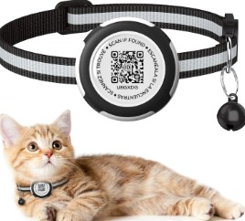
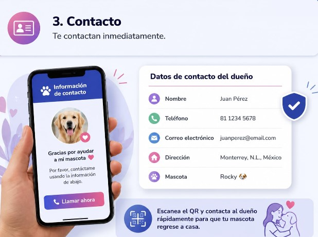

Conoce el proceso para proteger a tu mascota 🐾
Guardamos tus datos en el QR.

Cualquier persona puede escanearlo.

Te pueden contactar inmediatamente.
La persona encuentra a tu mascota.
Se muestra tu información de contacto.
Tu mascota puede regresar a casa.